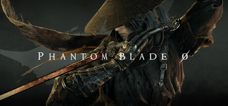
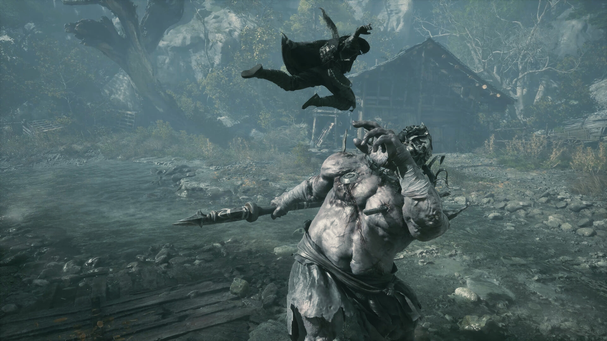

팬텀 블레이드 제로 사양 총정리, 최소 GTX 1660 6GB와 SSD 필수
팬텀 블레이드 제로 사양을 찾다가 스팀 사양란만 보고 "GTX 1660이면 되겠네" 하고 넘어갈 뻔했는데요. 공식 사이트 사양 페이지를 열어 두 페이지를 나란히 놓고 직접 비교해 보니 표가 2단이 아니라 4단이라 멈칫하게 되더라고요. 스팀에는 최소와 권장만 있고, 레이 트레이싱 권장과 패스 트레이싱 권장 두 단은 공식 사이트에만 올라와 있거든요.
결론부터 말하면 최소 사양은 GTX 1660 6GB, 목표는 업스케일링을 켠 1080p 30FPS이고 설치는 SSD가 필수예요. 이 글은 스팀 상점과 공식 사이트 사양 페이지를 10월 11일 기준으로 옮겨 적었어요.
팬텀 블레이드 제로는 S-GAME이 개발하고 언리얼 엔진 5로 만든 다크 무협 ARPG인데요, 그 PC 사양이 어떻게 갈리는지부터 차근차근 풀어 볼게요.

삿갓을 쓴 주인공과 타이틀 로고가 보이는 스팀 상점 대표 이미지예요
이미지 출처: 스팀 상점 – Phantom Blade Zero · 네이버 본문엔 받아서 재업로드 권장
팬텀 블레이드 제로 사양은 4단인데, 스팀에 없는 두 단은 뭔가요?
팬텀 블레이드 제로 PC 사양은 최소·권장·레이 트레이싱 권장·패스 트레이싱 권장의 4단이고, 스팀 사양란에는 앞의 두 단만 올라와 있어요.
| 단 | NVIDIA | AMD | 목표 (업스케일링 사용) |
|---|---|---|---|
| 최소 | GeForce GTX 1660 6GB | Radeon RX 5500 XT 8GB | 1080p / 30FPS |
| 권장 | GeForce RTX 3060 Ti 8GB | Radeon RX 6700 XT 12GB | 1440p / 60FPS |
| 레이 트레이싱 권장 | GeForce RTX 5060 8GB | 공식 표에 없음 | 1080p / 60FPS |
| 패스 트레이싱 권장 | GeForce RTX 5080 16GB | 공식 표에 없음 | 2160p / 60FPS |
| 저장 공간 | SSD 설치 필수 (설치 용량 GB 숫자는 공식 미공개) | ||
네 단 모두 공식 표기가 "업스케일링 사용" 전제라서, 위 해상도와 프레임은 네이티브가 아니라 업스케일링을 켰을 때의 목표치로 읽어야 해요.
팬텀 블레이드 제로 CPU와 램은 최소와 권장에서 얼마나 달라지나요?
램은 최소와 권장 모두 16GB로 같고, 달라지는 건 CPU와 GPU예요.
| 항목 | 최소 | 권장 |
|---|---|---|
| 운영체제 | Windows 10/11 64bit | Windows 10/11 64bit |
| CPU | Intel Core i7-8700K / AMD Ryzen 5 3600 | Intel Core i5-10600K / AMD Ryzen 5 5600X |
| 램 | 16GB | 16GB |
| 그래픽 API | DirectX 12 | DirectX 12 |
CPU 칸에 적힌 두 개는 인텔 쪽 하나, AMD 쪽 하나를 나란히 적은 거라 내 CPU가 어느 쪽이든 맞는 줄을 보면 돼요.
GTX 1660 6GB 최소 사양은 어떤 화면을 목표로 하나요?
최소 단의 목표는 업스케일링을 켠 상태의 1080p, 30FPS이고, GPU는 GTX 1660 6GB 또는 RX 5500 XT 8GB예요.

안개 낀 계곡 마을에서 거구의 적을 향해 몸을 날리는 장면이에요
이미지 출처: 스팀 상점 – Phantom Blade Zero · 네이버 본문엔 받아서 재업로드 권장
스팀 영문 사양란에는 "1080p / 30 FPS with upscaling enabled"라고 적혀 있고, 공식 한국어판에는 "1080p / 30 FPS(업스케일링 사용)"라고 나와요. 그러니까 네이티브 1080p에서 30프레임이 나온다는 뜻이 아니라 업스케일링을 켜야 닿는 목표라는 얘기죠. 그래서 최소 단은 "쾌적하게 즐긴다"가 아니라 "이 선에서 목표치를 노려 볼 수 있다" 정도로 받아들이는 게 맞아요.
RTX 3060 Ti 권장 사양은 어디까지가 목표인가요?
권장 단은 업스케일링을 켠 1440p, 60FPS가 목표이고, GPU는 RTX 3060 Ti 8GB 또는 RX 6700 XT 12GB예요.

비 내리는 기와 마당에서 여러 적과 맞붙는 장면이에요
이미지 출처: 스팀 상점 – Phantom Blade Zero · 네이버 본문엔 받아서 재업로드 권장
최소와 견주면 해상도가 1080p에서 1440p로, 프레임이 30에서 60으로 한꺼번에 올라가는 단인데요. 표에 적힌 GPU도 NVIDIA 쪽이 6GB에서 8GB로, AMD 쪽이 8GB에서 12GB로 커지네요. 램 16GB는 그대로라서 최소에서 권장으로 넘어갈 때 손볼 부품은 사실상 CPU와 그래픽카드 둘이랍니다.
레이 트레이싱 단과 패스 트레이싱 단은 어떤 카드가 기준인가요?
레이 트레이싱 권장은 RTX 5060 8GB의 1080p 60FPS, 패스 트레이싱 권장은 RTX 5080 16GB의 2160p 60FPS이고, 두 단 모두 NVIDIA 카드만 올라와 있어요.
- 업스케일링 기술명은 사양표에 안 적혀 있는데, 공식 사이트 뉴스(2025년 8월)는 레이 트레이싱과 DLSS 4, Multi Frame Generation으로 출시한다고 밝혔고, 올해 5월 NVIDIA 뉴스는 DLSS 4.5로 올려 출시한다고 적었어요
- NVIDIA 뉴스는 출시 첫날부터 DLSS Super Resolution과 Multi Frame Generation을 지원하고, PC 전용으로 레이 트레이싱 반사·그림자·카우스틱(caustics)이 들어간다고 적었어요
- 공식 사양 페이지·공식 사이트 뉴스·스팀 상점에서는 FSR과 XeSS 언급을 찾지 못했어요
표만 놓고 보면 권장 단이 1440p인데 레이 트레이싱 단은 1080p로 내려와요. 그러니까 레이 트레이싱을 얹는 대신 목표 해상도를 한 칸 낮추는 구조로 읽히네요. 패스 트레이싱 단은 2160p로 올라가는 대신 GPU가 RTX 5080 16GB로 확 뛰고요.
내 그래픽카드는 4단 표에서 어느 단에 해당하나요?
내 GPU 이름을 아래 표에 그대로 대 보면 어느 단인지 바로 나오고, 표에 없는 모델은 공식 기준으로 판정할 수 없어요.
| 내 GPU | 해당 단 | 목표 (업스케일링 사용) |
|---|---|---|
| GTX 1660 6GB · RX 5500 XT 8GB | 최소 | 1080p / 30FPS |
| RTX 3060 Ti 8GB · RX 6700 XT 12GB | 권장 | 1440p / 60FPS |
| RTX 5060 8GB | 레이 트레이싱 권장 | 1080p / 60FPS |
| RTX 5080 16GB | 패스 트레이싱 권장 | 2160p / 60FPS |
| GTX 1650 · GTX 1660 Super 등 표에 없는 모델 | 판정 불가 | — |
- 작업 관리자 성능 탭에서 내 GPU 이름부터 확인해요
- 위 표에서 같은 이름을 찾고, 램이 16GB인지 봐요
- 게임을 설치할 드라이브가 SSD인지 마지막으로 봐요
모니터 해상도로 보면 더 간단해요. 1080p 모니터라면 최소 단과 레이 트레이싱 단의 목표 해상도와 맞고, 1440p 모니터라면 권장 단의 목표와 맞아요. 2160p 모니터는 패스 트레이싱 단이 유일하게 맞는 줄입니다.
SSD 설치 필수라는데, 설치 용량은 몇 GB인가요?
공식 한국어 표기는 "SSD 필수"뿐이고, 설치 용량 GB 숫자는 스팀과 공식 사이트 어디에도 아직 공개되지 않았어요.
공식 문구가 SSD 필수까지라서, SSD에 설치하는 걸 전제로 잡는 게 안전합니다. 용량 숫자는 상점 페이지에 올라오면 그때 빈 공간과 비교하면 되고요.
팬텀 블레이드 제로 한국어 지원은 어디까지인가요?
한국어는 인터페이스와 자막을 지원하고, 음성은 영어와 중국어 간체만 지원해요.
| 언어 | 인터페이스 | 음성 | 자막 |
|---|---|---|---|
| 한국어 | ✔ | ✘ | ✔ |
| 영어 | ✔ | ✔ | ✔ |
| 중국어 간체 | ✔ | ✔ | ✔ |
한글 더빙은 없고, 한글 화면과 한글 자막으로 영어나 중국어 음성을 들으며 즐기는 구성이네요. 위 표는 스팀 지원 언어표를 10월 11일 기준으로 옮긴 거예요.
출시일이 10월 28일과 29일로 갈리는 이유는 뭔가요?
스팀은 10월 28일, 공식 사이트는 10월 29일로 적고 있는데, 같은 시점을 시간대만 달리 읽은 걸로 보이고 스팀의 출시 시각 값을 한국 시간으로 바꾸면 29일 오전 11시쯤이에요.
| 어디 | 표기 |
|---|---|
| 스팀 상점 | 2026년 10월 28일 출시 예정 |
| 공식 사이트(영문) | RELEASE DATE 10/29/2026 |
| 공식 사이트(한국어) | 발매 날짜 2026/10/29 |
스팀 상점 페이지 안에 들어 있는 출시 시각 값은 UTC로 10월 29일 02:00이에요. 한국 시간(UTC+9)으로 바꾸면 10월 29일 오전 11시, 미국 서부 시간으로는 10월 28일 저녁 7시라서 스팀의 28일이 그쪽 날짜로 보여요. 다만 공식이 "한국 11시"라고 따로 발표한 건 아니고 제가 환산한 값이라 '11시경' 정도로만 잡아 두세요ㅎㅎ
사전 구매는 8월 12일부터 열렸고, 스팀 표기 가격은 일반판 69,800원, 디럭스 79,800원이에요.
자주 묻는 질문
Q. 팬텀 블레이드 제로 체험판이나 데모는 있나요?
집에서 받아 해 볼 수 있는 체험판은 스팀 상점에 없어요. 공식 사이트의 데모 소식은 2024년 게임쇼 월드 투어, 2025년 S-Party 같은 오프라인 시연회와 실기 영상이에요.
출처: 공식 사이트 – 게임쇼 월드 투어 소식 · 공식 사이트 – S-Party 2025 소식
Q. 스팀 말고 다른 곳에서도 살 수 있나요?
공식 사이트 뉴스에 따르면 8월 12일 사전 구매가 PS5, 스팀, 에픽에서 함께 열렸어요.
Q. 맥이나 리눅스에서도 돌릴 수 있나요?
스팀 상점에 지원 플랫폼으로 Windows만 표기돼 있어요.
Q. 스팀 상점에 DRM 표기가 있나요?
타사 DRM으로 Denuvo가 표기돼 있어요.
팬텀 블레이드 제로 사양 정리
사전 구매 버튼을 누르기 전에 내 GPU가 위 표의 어느 단인지, 그 단의 목표치가 내 모니터와 맞는지만 확인하면 끝이에요. 아직 출시 전이라 사양이 바뀔 수 있으니 구매 직전에 스팀 상점 사양란을 한 번 더 열어 보세요~
참고한 곳 (2026.10.11 기준)
· 스팀 상점 – Phantom Blade Zero
· 팬텀 블레이드 제로 공식 사이트 – 시스템 요구 사양
· NVIDIA GeForce 뉴스 – DLSS 지원 게임
· 팬텀 블레이드 제로 공식 사이트 – 사전 구매 뉴스
· 팬텀 블레이드 제로 공식 사이트 – RTX·DLSS 4 뉴스